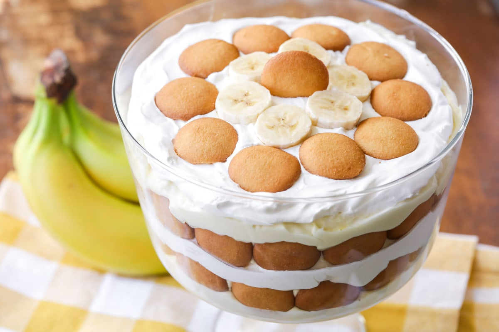

Banada Pudding

Main Page
Do you have a ton of bananas that over ripe look too brown for safe consumption?(they're usually fine to eat). Don't throw them away! Make this instead. This banana pudding is simple recipe and perfect for all those unsused bananas!
Prep Time: 30 min.
Total Time: 50 min.
Makes 12 servings, 2/3 cup each.
What You Need:
How to Make It:
- HEAT oven to 350F.
- MIX 1/2 cup sugar, slour, and salt in top of double boiler. Blend in 3 egg yolks and mix. Cook, uncovered, over boiling water 10 to 12 min. or until thickened, stirring constantly. Remove from heat; stir in vanilla.
- RESERVE 12 wafers for garnish. Spread small amount of custard on the bottom of 1-1/2 quart baking dish. Cover with layers of 1/3 each of the remaining wafers, bananas, and remaining custard. Repeat layers 2 times
- BEAT egg whites on high speed of mixer until soft peaks form. Gradually beat in remaining sugar until stiff peaks form. Spread over custard, sealing well to the edge of the dish.
- BAKE 15 to 20 min. or until lightly browned. Cool slightly. Top with reserved wafers just before serving
Enjoy!
Main Page